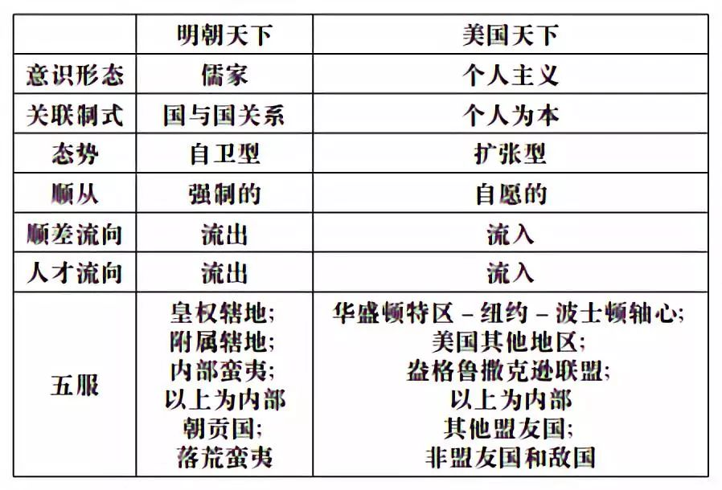

收录于合集
赵汀阳
中国社会科学院哲学研究所研究员，中国社会科学院互动知识中心主持，代表作品《美学和未来的美学》、《天下体系——世界制度哲学导论》、《坏世界研究——作为第一哲学的政治哲学》等。
摘要：天下不仅是一个概念，也是一个方法论，可以用于分析世界政治。2017年，塞尔瓦托·巴博纳斯（Salvatore Babones）出版的《美式天下》一书以天下为方法论分析了当今世界政治问题，他同意未来世界应该是一个天下体系，但存在着“美式天下”与“中式天下”的竞争，他相信“美式天下”将胜过“中式天下”。文章回应了巴博纳斯的问题，并进一步分析了天下概念的要义。文章认为，美国体系几乎不可能转化为一个天下体系，因为美国体系的原则是单边主义的帝国主义，同时以个体理性为其方法论，这与天下概念的要义正好相反。天下概念的基础原则是共在的存在论和关系理性。考虑到未来世界的技术条件前景，只有关系理性和共在方式才适合万物互联的未来技术，所以未来的天下体系只能以关系理性和共在理论为基础。
天下逐鹿：“美式天下”对“中式天下”？
世界会出现“美式天下”和“中式天下”的竞争吗？这是塞尔瓦托·巴博纳斯（Salvatore Babones）的问题，却是我的疑问。要进入这个政治实践问题，先要回到一个基本理论问题：天下究竟是什么？我希望在此能给出一个比先前更清楚而又足够简练的解释。
鉴于不可能逆转的全球化和互联网事实，尤其是人工智能技术的普遍化前景，可以看出，在未来，链接世界各地的技术系统所拥有的权力将明显大于国家拥有的权力，因此，政治核心问题将由国家内政以及国际格局转向作为全球共同问题的世界格局，同时，政治制度建构也将由主权国家逐步转向天下体系，即一种在多文化条件下保证世界和平及万民共享利益的世界制度，或者说一种世界宪法（world constitution）。其基本特性是：一个“无外”（all-inclusive）的互联世界，在其中不存在排他性（non- exclusive）的资源、技术和知识的制度安排。简单地说，一个非排他性的制度所定义的无外世界就是天下。
我对天下体系的设想始于两个难题：康德的永久和平和亨廷顿的文明冲突。康德和平方案只限于文化与政治上具有相似性的国家之间有效，而在不同文化之间就失效了；亨廷顿的文明冲突正是康德方案失效的现实表现，每种文化不可让渡的主体性使文明冲突无望解决。其实，康德方案的局限性和亨廷顿问题的不可解性有着一个共同的方法论原因：现代理性，即每个独立自治的主体谋求自身利益最大化的个体理性（individual rationality）。个体理性方法论不仅应用于个人，也应用于公司乃至国家。个体理性不是谬误（事实上个体理性是现代得以繁荣发展的方法论），而是有着局限性，它不足以解决全球尺度和世界网络化条件下所产生的新问题。因此，要解决世界级别的共同问题或整体问题，就需要一个尺度与世界规模相称的概念框架，还需要一种与网络化生存相称的理性方法论，这就是“天下体系”和“关系理性”（relational rationality）。
目前对天下体系主要有两类批评。
一种意见认为天下体系过于理想化，只不过是一种想象。例如历史学家葛兆光就认为天下理想只存在于儒家文本中，并非历史事实。对此，我部分同意，或者说，部分不同意。周朝无疑是天下体系的一种实践，因此不能说天下只存在于文本。由于历史条件所限，周朝的实践未能完全实现天下概念，然而周朝的制度“立意”表明了天下之意图。另外，理想不是缺点，反而是人类思想之必需。理想为实践提供了标准，假如没有理想标准，也就无从理解实践的局限性。理想正如尺子，乃一切营构之所必需，但建造出来的是房子，却不是尺子。这意味着，理想是创造现实的方法论，却不是现实的模板。儒家文本里的天下理想就像柏拉图文本里的理想国一样都是重要的思想资源。因此，这种历史学质疑对于哲学理论是一种无效批评。
另一种意见以政治学家柯岚安（William A. Callahan）为代表，他似乎同意天下概念的理论意义，却质疑天下的实践可信性：“虽然赵汀阳对西方以其他地方的损失为代价去推广其世界观的做法提出了合理的批评，可是他的想法真的不同吗？难道他不想把中国的天下概念强加于世界吗？他试图解决世界的不宽容问题，可是‘中国治下之和平秩序’就无此风险吗？中国中心主义（Sinocentrism）会好过欧洲中心主义（Eurocentrism）吗？天下概念真的能够创造后霸权的世界秩序而不是一种新霸权吗？”柯岚安的担心颇具代表性，可是他所担心的危险对于天下体系来说是指鹿为马。表面上看，此种担心与中国的发展改变了世界格局有关，但在其深处，也与理论框架有关。在欧洲的理论框架里，用于表达世界秩序的最大规模概念是帝国，因此人们很容易对号入座地把天下理解为一种帝国。问题是，天下概念在广度和深度上都超出了帝国概念。尽管帝国与天下有某些重叠的相似性，比如说都试图建立世界秩序，但天下体系并不包含帝国的征服性、霸权性特别是敌对性（hostility）；相反，天下体系具有自愿性、共享性和友善性（hospitality），而且天下概念指向“一个体系，多种制度”的兼容体系，其兼容性建立在关系理性所建构的共在关系上，而不是建立在统一的宗教或意识形态之上。因此，天下体系是普遍共在关系所定义的秩序而不是某个国家的统治，共在关系为王，而不是某个国家为王，其预期的效果是，天下体系的任何成员都不可能达到自私利益的最大化，但可指望达到共同安全和共享利益的最大化。
近来塞尔瓦托·巴博纳斯的《美式天下》（简称AT）提出了一个富有想象力的挑战，他试图超越帝国概念而采用天下概念来解释世界体系，尤其是美国的世界体系。这表明他意识到，对于未来可能的世界秩序来说，帝国概念已经属于过去时，而天下属于将来时。巴博纳斯相信天下是一个关于世界体系的具有普遍意义的理论概念，并不专属于关于中国的历史描述，于是他别出心裁地认为，新世纪以来的美国不再是帝国，而正在转型成为一个天下体系，他称之为“美式天下”（American Tianxia）。尽管天下是来自中国的思想概念，但在实践上，“美式天下”将胜过“中式天下”。就是说，巴博纳斯试图论证中国不是能够实现天下体系的最合适国家，而美国才是那个能够实现天下体系的对口国家。正如第一章题目的有趣措辞：天下是个“合式概念”（right concept），可是中国却是一个“不合式国家”（wrong country），所以应该由美国来实现天下体系。这就是巴博纳斯的核心论点。
巴博纳斯试图论证，中国受制于有限能力而难以建构天下体系，而只有美国才具备建立天下体系的充足能力。他承认中国正在变得强大，但不相信西方流行的关于中国将会超越美国的神话。具体地说，尽管在不远的将来，中国的经济总量会超过美国，但在以科学技术为代表的知识生产上，中国不太可能超越美国，而且在价值观上，美国的个人主义也比中国价值观更具吸引力。有趣的是，他没有采取流行的“政治正确”论证，而是相信个人主义与人们自私之心更为吻合。因此，巴博纳斯料定美国主导的世界秩序难以撼动，更重要的是，美国秩序正在自己转型为更加稳定的天下体系。正如他自己所概括的：“美式天下是一个极其稳固的世界体系构造。它所以如此稳固，是因为世界人民使然——不是众多国家而是人民使之稳固。美国立于个人主义，而越来越多的人民将其个人利益置于其祖国之上，他们各自与美式天下建立了联盟。于是，并非福山的自由民主模式，而是自由个人主义正在成为最终的自由意识形态而通向历史的终结。”
巴博纳斯试图解释个人主义的优势：“美式个人主义是个作为空集的意识形态，即个人主义是一个没有教义的意识形态。”这里触及一个深层的问题：什么算是“教义”（tenets）？个人主义的一个宣传口号是“每个人可以追求各自理解的幸福”，仅就此而言，这个教义倒是很像个“空集”，其所指似乎可以代入任何内容（各人想象的幸福）。但如果来考察个人主义的学术版原则，即“追求自身利益的最大化”，情况就非常不同了。显然，利益不是空集。也许每个人想象的幸福各有不同（其实也大同小异），但几乎任何一种幸福所必需的物质利益和生存资源几乎完全相同。幸福的主观想象也许不存在政治学和经济学意义上的“分配问题”。各自的幸福想象貌似互不冲突，但实现任何一种幸福所必需的物质利益或生存资源却必定存在着严重的“分配问题”，在生存资源和物质利益上很难避免形成零和博弈以及不公正和不平等。这意味着，追求各自幸福的自由不是空集而是空话，而实现幸福的必要条件即利益和资源才是真问题。个人主义或个体理性方法论显然无力在世界规模上解决合理分配的难题，因为以“自身利益最大化”为宗旨的个人主义或个体理性所决定的非合作博弈正是导致各种冲突（从人际冲突、国际冲突到文明的冲突）的根本原因。解铃还须系铃人，只有当人类理性由个体理性为主导转向以关系理性为主导，才有希望解决世界性的共同安全和利益合理分配问题。就是说，只有以关系理性为主导的世界秩序才有可能实现一个众望所归的天下体系。
不过，巴博纳斯显然宁愿坚持认为个人主义有着最大诱惑力，因而美国能够以个人主义为基础来建立天下体系。在他看来，个人主义的成功在于其难以抵制的“私利诱惑”有效地吸引其他国家的人为了更优报酬而为美国服务。不仅有赏，还有罚，在美国秩序里，那些不愿意“拥抱个人主义”的人就“没有机会获得成功”（这个论证几乎接近商鞅- 韩非的赏罚理论）。由于人心自私，因此，“针对个人”的个人主义策略“在挑战其他社会的价值观上”比起“针对他国”策略有效得多。这个论证真是坦率。可是，这种拒绝利益共享的零和博弈思维反而暴露出“美式天下”的帝国主义底牌，即“美式天下”仍然在敌对思维的框架里去思考世界秩序，因此在实质上追求的还是帝国主义而不是天下体系。美国确有新帝国主义的优势，却不是“美式天下”的优势，因为敌对思维正是天下概念的反面，天下体系的一个基本策略或技艺就是通过创造可以共享的新关系而达到化敌为友。凡是拒绝化敌为友策略的体系都不属于天下体系。毫无疑问，帝国模式也有能力建构世界秩序，问题是，那不是天下体系。
也许美帝国在帝国概念上有许多创新，并非传统帝国主义，正如巴博纳斯所强调的，美国成功地使个人主义生活方式成为一种普遍诱惑，并且不再追求领土扩张而追求世界领导权，这与传统帝国确实有所不同，因此巴博纳斯认为美国秩序越来越接近天下体系：“美式天下是一个后帝国主义的天下。它无须通过征服外部领土来获得更多的金钱和人力资源，因为金钱和人力资源都自动流进美国。”这一点在表面上有些接近天下的自愿加入原则。事实上，美国也曾经从别国手里夺得大量土地，美国的转变只是因为攻城略地的策略过时了，在管理上和道义上的代价得不偿失，因此转而采取更高明的统治世界策略，即通过支配控制世界的金融资本、高新技术和资源命脉而以极小成本达到统治世界。这是非常高明的策略，但未必是可持续策略。别人会一直同意美国这样的统治吗？别人不同意，怎么办？“别人不同意”是所有一直无法解决的社会问题的缩影。
关于“美式天下”，巴博纳斯还有许多有趣的见解。他相信天下需要一个主导世界秩序的中心国，即化为一般理论概念的“中国”。就当下世界而言，美国就是决定世界秩序的中心之国，因此，按照天下概念，美国才是当今世界的“中国”，而中国反倒不是“中国”。据说当今世界“可识别等级制”中的“顶峰”都位于美国，他列举了纽约作为金融、传媒、艺术、时尚顶峰，波士顿作为教育中心顶峰，硅谷作为信息技术顶峰，好莱坞作为电影顶峰，巴尔的摩作为医药顶峰，所以美国是“中国”。这些证据显然夸大了，顶峰与众多“次峰”之间的差距并不大，顶峰并无一览众山小的效果。英国和欧盟的金融决不可低估，巴黎和米兰的时尚或高过纽约，伦敦和德国的当代艺术与纽约一时瑜亮，英国和德国的教育是否不如美国也未见分晓，如此等等。当真要说美国有哪些顶峰，恐怕应该是先进武器、美元霸权、信息技术、人工智能，基本上都属于统治他人的武器概念，可见美国的顶峰都是武器性质的。巴博纳斯没有提及美国武器，而这是唯一不可不提的美国顶峰。美国武器不仅在技术高于其他国家，在数量上也恐怕超过其他所有国家先进武器的总和，美国发展了如此不对称的军事力量，足以消灭全人类多遍，对此唯一有效解释是：美国建立的是帝国体系，所以需要压倒性的军事优势来控制世界秩序，而不是共享安全和利益的天下体系。
巴博纳斯关于“美式天下”的论点还基于明朝与当下美国的比较。巴博纳斯对我（和秦亚青等）不使用明朝作为天下体系的例子感到不解。可为什么是明朝呢？假如要为天下体系提供例证，明朝是一个比较奇怪的选择，因为明朝决不是好例子。在中国历史上，唯一的天下体系是周朝。如前所言，尽管周朝天下未及世界规模，但其制度立意是以天下概念为准。自秦汉终结了天下制度，中国转型为大一统国家，其国家性质比较复杂，既不是帝国，也不是民族国家，按照我在《惠此中国》中的分析，秦汉至清朝的大一统中国是一个“内含天下的国家”，其根本特性是，大一统国家继承了天下观念的精神遗产，却又放弃了天下体系制度，于是把天下的世界性结构转化为国家的内部结构，把天下观念用于国家建构而发明了“一国多制”的大一统。因此，秦汉以来的中国不再是天下，而是以天下为内在结构的国家。除了周朝，任何朝代都不是天下体系的实例。
进一步说，即使把“内含天下的中国”理解为天下观念的应用，那么，比较成功地应用了天下观念的朝代也应该是汉朝、唐朝和清朝。天下观念的应用标志是“一国多制”，从发明权来看，汉朝是一国多制的发明者；以兼主长城内外而论，唐朝当为首创；以版图言之，当属元代或清朝，清朝虽不及元朝广大，但制度完善，实际控制程度更高。相比之下，明朝在“一国多制”上并无突出成就，至多是完善了元朝的土司制度，所以明朝绝非天下之例子。即使不论天下之世界精神，而只论中国的本土成就，明朝也不是中国的模范朝代。按照传统理解，夏商周三代是模范朝代，尤以周朝“郁郁乎文哉”为代表，所以孔子“从周”（《论语·八佾》）。
其次的模范朝代为汉唐与清，为大一统之代表；若以文化水平为准，模范朝代则是唐宋；若以政治治理而论，宋为模范，其时天子与士大夫共治天下；若以版图而言，当属唐、元、清；若论及对外关系，朝贡制度自古有之，明朝只是沿袭而已。就综合指标而言，在中国历代大一统王朝之中，明朝位置不是很高，就专项而言，明朝也无优势，反而政治以昏庸为主，否定共治传统，建立了绝对专制；文化趋于平庸，思想不及先秦，诗词不及唐宋，绘画不及宋元。虽有郑和航海（后来禁止了）、比较发达之工商业（有争议）以及通俗小说，但这些优点实不如缺点那么突出。总而言之，明朝并非一个代表性的朝代。欧美学者之所以特别重视明朝和清朝，是因为欧洲真正开始直接接触中国是在明朝，因此对明清的了解较多。除了极少数专家，多数欧美学者对宋朝之前的中国缺乏足够了解，这意味着他们难以理解明清制度的历史线索，不容易确定明清的历史地位，因而导致了对明清的误读。
尽管巴博纳斯把明朝看作天下体系是个错误，但如果把明朝和美国看作是超级大国，那么它们之间的比较就非常有趣而且有所启示。他给出了以下对比性的表格：

巴博纳斯总结的明朝与美国的差异以及美国体系的优势基本如实，他发现美国也有“五服”，这一点确有创意，但也有一些不准确或疑问之处。
首先，他把英国、加拿大、澳大利亚等国都看作是美国体系的内部地区，与明朝的“内部蛮夷”地位相等，不知道英国等国是否同意这种美式自大。
其次，明朝的绝大多数朝贡国并非被强制而成为朝贡国的。明朝的朝贡国情况多样，有一些高度分享着中国文化的国家，比如朝鲜和越南，与中国有着特别密切的关系。就这些关系特别密切的国家来说，它们成为明朝的朝贡国，一方面来自明朝的威势，另一方面也因为依附大国的好处，很难说是全然被迫，因为“事大”是一个保证安全和利益的理性选择；另有许多小国，与明朝既无竞争关系也无依附的必要，但在朝贡中能够获得“顺差”的经济回报，因此乐于成为朝贡国，这属于实用主义选择；还有一些小国与明朝往来不多，成为朝贡国或因潜在利益或是趋炎附势，属于机会主义选择。按照巴博纳斯的标准，后两种情况，即实用主义和机会主义选择，显然属于“自愿”。正如在美国体系里，自愿依附美国的大多数国家也是出于实用主义或机会主义。是否有超越实用目的而一心热爱美国的国家？这是个疑问，一般来说，国家之间的“爱情”恐怕难得一见。毫无疑问，美国不仅在总体上胜过明朝，而且几乎在每个方面都远远强过明朝。可是美国体系和明朝体系都不是天下体系，这才是问题所在。
美国体系在未来是否能够转化为天下体系？这是真正有趣的问题。美国体系在文化传统上存在着两个反天下的基因：（1）单边普世主义。这是来自基督教模板的一神教基因，它不考虑其他文化也有普遍化的要求以及值得被普遍化的成就，而天下体系只能建立在兼容普遍主义（compatible universalism）的基础上；（2）以个体理性去追求排他利益的最大化。这势必产生“他者不同意”或“他者不合作”的问题，进而导致冲突。单边普世主义和个体理性正是冲突的原因而不可能成为冲突的解药。在我看来，“美式天下”不是未来的一个可能世界，而是一个不可能世界，除非美国发生改变思维的文化大革命。
中国的历史性
在许多中国人的看法里，西方各国一样都是西方。这是一种共时性的误读，其实英国、美国、法国、德国、意大利等等各国非常不同，不能简单还原为一个西方。同样，在许多欧美人的想象中，中国从来都是一样的国家，并无实质变化。这是一种历时性的误读。无论何种误读，实质上都是将需要理解的对象加以简单化，将其纳入自己熟知的知识体系，消除需要深入研究的陌生特性，以便容易解释，并按照自己所乐见的结果去解释。可是这种理解同时正是误解，反而导致知识交流和知识生产的许多错误。有个成语适合这种情况：削足适履。
这里只限于讨论几个与我们的主题密切相关的误读。首先是关于中国制度性质的历时性误读。中国经常被看作是一个自古以来的专制帝国，只有朝代变化，而在政治实质上无变化。这种误读完全忽视了中国历史上的三次制度革命，其变化深度并不亚于欧洲政治的变化。第一次制度革命是周朝创建了天下体系。在此之前的中国并无成熟的政治制度，大概属于“酋邦”盟约体系。周朝通过创造天下体系而把酋邦格局变成万国封建制度；第二次制度革命是秦汉终结了天下体系，创建大一统国家。自秦汉以来，中国不再自认为本身即世界，但仍然自认是世界的中心。在很长时间里，大一统中国被似是而非地认为属于帝国类型的国家，但真正的本质在于它将天下的观念遗产转化为国家内部结构而成为一个“内含天下的中国”，即一个将世界结构化为国内结构的国家，可称为“世界模板国家”（a world-pattern country）。显然，继承历史遗产不等于没有实质变化，正如英国和法国虽然不再是帝国，但明显有着帝国遗产；第三次制度革命属于清朝终结之后的现代中国，它接受了现代国际秩序而成为一个现代主权国家。现代中国也继承了大一统的遗产，因此不属于欧洲式民族国家，而是一个“合众国”类型的主权国家。合众国是与民族国家并列存在的另一类现代国家——这一点往往被忽视——事实上，现代大国几乎都是合众国类型，包括美国、中国、俄罗斯、印度等。由于移民问题，许多民族国家将来也有可能变成合众国类型，因此，在未来，民族国家或许不再是国家的主要形式。
另外，天下概念也很容易被误读，因为天下概念有其理论用法和文学用法。作为理论用法，天下指的是世界、万民和普遍制度构成的三位一体，即地理学、心理学和政治学三层合一的世界。当然，这只是我的理论化概括，来源于早期中国关于天下的几种各有偏重的理解，其中周公倾向于把天下理解为普遍制度，孔孟倾向于理解为万民之心，老子倾向于理解为世界万事的集合。在天下的理论意义里，天下的幅度包括整个世界。常见的一种误读是把“五服”等同于天下，其实，五服之外的“四海”（不是海，而是远不可及而尚未接触的地方）也属于天下，虽然四海尚未进入天下体系，但四海仍在天下眼界之内。理论上说，天有多大，天下作为“天之所覆”就有多大，因此，天下体系是无限开放的，决不是一个封闭的有限体系。假如作为文学用法，天下往往指的是所控制或统治的领域，常用于夸张表述，比如说“一统天下”通常指一统中国，甚至只是中国之一隅。如果把历史文献中的文学用法当成理论所指，那是学术失范。
另一个常见的误读是所谓朝贡体系。这个误读与费正清的影响力有关。“体系”意味着对体系内的成员有着政治、经济、外交甚至军事上的支配或控制。据此来看，古代中国只有朝贡制度，远远没有达到朝贡体系，因为古代中国对周边国家的影响力主要在文化方面，虽有政治册封之名，却无政权与军事支配之实；虽有朝贡经济交易，实为怀柔抚远之举而承受逆差之亏，因此，朝贡制度实在配不上朝贡“体系”之称。问题在于，大一统国家与帝国虽貌合而神离，并不追求对远方的控制，只求边疆安定，无须举兵劳民。不过，巴博纳斯倒是看出了这一点，他认为明朝的对外消极策略不及美国的“扩张性”策略多矣，美国积极的朝贡策略通过向多国征收加入美式天下的“会员费”或“租金”而为美国获取了巨大利益。
还有一个对中国历史的误读是所谓外族统治问题（比如美国的“新清史”）。既然不能因为有的英国国王来自法国或德国就把英国看作是法国或德国的一部分，那么中国也一样。中国历史上非汉人统治者几乎占到一半。更重要的是，中国从来都由各地人民混成，在远古中国（新石器时代到夏商西周），所有部落都属于农耕、渔猎和放牧的混合经济，当时既无铁犁牛耕也无驯马，故而不可能依靠单纯经济而存活，也就无所谓农耕民族和游牧民族之分。被追认为中国始祖的黄帝所部就过的是放牧、打猎和农耕的混合生活，根据所居地理以及偏重游牧不断移营的特点，黄帝所部更有可能属于后世所称之蒙古族，可见游牧部族实乃中国的起源之一。春秋战国之后生产技术的发展才使中国分化为农耕社会和游牧社会。因此，任何部族都有逐鹿天下问鼎中原的合法性。蒙古（包括匈奴、突厥等）、鲜卑（含拓跋部等）、契丹、女真、满族、藏族都不是外族，都参与了逐鹿中原，也几度入主中原或半有中国。所以，蒙古、契丹、女真、满族和汉人等各族人民都是中国历史的创造者。
理解一个国家的本质关键在于理解其长时段的生长方式，尤其是理解决定其连续历史性的动力型。至于那些偶然事件或一时之现象，都只能说明“事件性”而不能解释“历史性”，而事件性只是说明了无影无迹的消失，历史性才贮存长久常在的问题。在前中国时代里，从蒙古地区到广大南方，从辽河流域到西域，都有文明发生，多达数十处，形成苏秉琦先生所称之“满天星斗”格局。苏秉琦先生认为，其中对形成中原核心文化最为重要的是从辽西至蒙古中部，经山西而南达晋南河洛地区的y型的文明交汇通道。我愿意补充一点：在y型通道的同时或稍后时期又形成了自山东过河南而通陕甘的文明交汇通道，同时还有自西南而达河南，自江南而上中原的文明交汇通道，与y型通道合起来形成“天”字形文明网络。尧舜时代之后，中原逐步成为中心，形成了许宏所称之“最早的中国”。接下来是“模范”三代，其中由周朝创造了天下体系。周朝式微时，各国为了问鼎中原而逐鹿中原，终于形成了连续不断两千多年的“向心漩涡”生长模式。我相信“漩涡模式”能够有效解释中国的连续生长方式以及多样一体的格局：无论文化成分多么复杂，都卷入在向心的漩涡中，汇合而成中国。中原文化所以为主，所以能够形成漩涡的向心力，则是因为中原最早拥有成熟的文字和政治制度，因而形成领先的知识生产；能够建构具有时间优势而连续不断的历史叙事，因而能够建立政治正统标准。同时，天下观念所主导的政治制度具有最大容量和最广泛的亲和力，使得任何地区的人民都有合法理由参与中国的建构，因此，舟车所至之处，万民尽皆主动卷入到“中国漩涡”之中。汉字、历史叙事和天下观念互相促成而形成以历史为知识之本、以天下为精神之维的意识世界。可以说，在中国的精神世界里，基本信念不是宗教，而是历史；基本视野不是民族，而是天下。
概括地说，中国由“满天星斗”格局逐步生长出网络式的天下格局，而天下观念和中国观念的结合又形成逐鹿中原的旋涡模式，向心运动的旋涡模式所产生的结果是大一统中国，即一个内含天下的中国。只有发现大一统中国的内在结构是一个容纳万民的天下结构，才能够解释为什么古代中国既不是帝国，也不是宗教国家，更不是民族国家，也因此能够解释为什么古代中国是内敛而非扩张的，却得以吸收众多文化和卷入多地各部而变成一个大国。这是一个最简练理论版的中国故事，它表明了天下观念在应用上的演变，即由世界性的天下体系建构转而内化为国家内在结构的建构，同时表明，对于大一统中国而言，朝贡制度早已退化为一个中心国家的象征，而无支配性的“系统”之实。在这里讲述这个中国故事是希望能够有助于对中国有一个合理的想象，并且消除一些削足适履的误读，然后才能够去想象和分析未来世界的多种可能性。
复习“天下”的新词典
巴博纳斯的“美式天下”提出了天下的概念与实践关系问题。天下是一个理论概念，那么，是否存在着实现天下体系的多种可能实践？是否可能有多种天下体系？理论上说，这是可能的。我们知道，未来总是呈现为博尔赫斯所说的“时间分叉”，即存在着同等可能的多种可能性。那么，对于一个具有未来性的概念，比如天下，理当也存在着“时间的分叉”。
一个概念的意义或为开放的或为封闭的。数学和科学的概念通常有着确定而封闭的意义，比如说，我们不能把“平行线”的概念修改为“能够在远处相交的两条直线”（在非欧几何学里，我们只能说不存在真正的平行线）。属于生活领域的概念，有的有着确定含义，有的则有着开放性的用法，不能一概而论。比如说，“船”的概念是确定的，指能够在水面上航行的载体，而“飞船”只是一个比喻，其实不是船，而是空间里的飞行器。但那些表示生活方式的大概念，尤其是属于政治、伦理和文化的概念，却多数有着开放的意义空间。洛克、休谟、黑格尔、马克思所理解的自由就非常不同；柏拉图、孔子、罗尔斯所理解的公正也非常不同；希腊人和现代人所理解的民主也非常不同，如此等等。天下概念也同样有着开放的意义空间，可以通向多种不同的天下体系，但概念的开放性不等于任意一种意义都是合适的。每个概念都具有一种目的论的（teleological）限制——当然是人设的目的而不是神的目的——或者说，一个概念意味着一种事物的存在论（ontological）意图，一个事物至少要达到某种标准才是其概念所指的“这种事物”。一个完全无限制的概念就不再是概念了，而是一个完全被解构了的能指。我愿意举出“艺术”的概念。如果任何东西包括垃圾都算艺术，那么就没有任何一种东西是艺术或不是艺术（不难看出，这个艺术悖论模仿了维特根斯坦的规则悖论）。那么，就天下概念而言，要证明一种天下体系确实属于天下概念所承诺的天下体系，就需要分析天下概念所蕴含的意图。
毫无疑问，天下体系的实践实例（周朝的天下体系）只是理解天下概念的一种参考，并不等于天下概念本身。正如希腊城邦实践的希腊民主并非现代民主的模板而只是一种历史参考资料，周朝的天下实践也不是未来天下的模板而只是历史参考资料。那么，天下的本意是什么？其一，“协和万邦”（《尚书·尧典》），类似于世界永久和平，但比康德方案的尺度大得多；其二，“生生”（《周易·系辞上》）而达到“大同”（《礼记·礼运》），使世界万民过上有意义的生活，因此万民和睦如家庭（大同的意思不是统一价值观，而是多样一体，和睦如家）；其三，“以天下为天下”（《管子·牧民》）或“天下为公”（《礼记·礼运》），即世界成为万民共享的政治主体，成为世界公器。如果从天下的否定性含义来看，天下体系拒绝任何一种帝国主义体系，拒绝通过征收霸权“租金”而肥私。
天下的意图是抽象的，而实现天下体系的制度必是具体的，需要根据实际条件而定。根据未来世界的可能条件，特别是技术条件，未来新天下体系有可能将以世界规模的漩涡模式和网络模式相结合的方式而形成。人工智能、互联网、万物网、生物技术、量子技术等“技术化存在”将成为未来世界的存在方式，因此，以个体为主体的个体理性思维方式将不得不服从世界万物互联的存在方式，必须转向与互联存在更为相配的关系理性思维方式，即“共在先于存在”的思维方式，否则很可能出现无法控制的灾难。特别需要注意的是，个体理性的加总无法必然形成集体理性，因此个体理性不具备应对大规模危机的能力。显然，只有关系理性有可能建构集体理性。
新天下体系虽然必定与古代天下体系有诸多不同，但其制度精神上仍然相通。天下概念在古代过于前卫，而对于未来世界却很契合。我在《天下的当代性》中举出了新天下体系所需“词典”里的一些关键词，它们包括一些长久有效的方法论和原则。请允许我在此复述其中部分关键词：
1. 配天。天道是万物运行的条件，从属于天道的人道就必须符合天道，此即所谓配天。配天意味着自然是自由的限度，万物是人的尺度。如果与此相反，人被理解为可以任意征服自然的绝对主体而成为万物的尺度，就是逆天。逆天将会制造无法补救的自然失衡而自取灭亡，因此，天道是人的绝对限度，人只能在天道界限内进行自由创作。比如说，试图创造不死的超人或人机一体的新物种，恐怕就是逆天。天下体系首先需要以制度权力去限制人类无法承担后果的逆天行为，特别是不可控制的技术冒险或政治冒险，这是为了保证人类的生存安全。
（1）生生。既然自然产生万物，自然之本意就是让一切存在继续存在，让一切生命繁衍生息。天意如此，天下体系之意图也必当如此，必以万民普遍受益的制度去维护世界多样性，并以共在原则去建构相辅相成的存在关系，使世界的共在利益大于每个国家之私利。
（2）无外。天无外，所以天下无外。人类普遍安全或永久和平的一个关键条件是世界内部化，使世界成为一个不再有外部性的无外世界。世界内部化是长久维持所有国家共在关系的条件。天下体系将成为一种无外的监护制度而维护世界的普遍秩序，这是一种反帝国主义制度。天下体系属于世界而不属于任何国家，即“以天下为天下”之意，也是“天下为公”之义。简单地说，“无外”的世界就是世界的内部化。
2. 关系理性。关系理性实乃人道之基本原则。人道必以普遍安全或永久和平为第一要义，因此，人道的理性首先考虑互相安全，以排除战争为基本要求，并把竞争限制在互相伤害最小化的范围内。天下体系的制度理性必以关系理性为其原则，以保证天下成为非排他性的存在，或者说最大规模的共在方式。于是有：
（1）互相伤害最小化。这是生生原则的一个直接运用。互相伤害最小化是共在关系的必要条件，满足了理性的最大限度风险规避，是最彻底的理性原则。根据理性要求，互相伤害最小化优先于自身利益最大化。
（2）相互利益最大化。即普遍受益策略与利益互补策略。相互利益最大化是一个比互相伤害最小化更为积极的理性运用。既然天下以全球互联和互相依存状态作为条件，那么，在无外的天下里，相互利益最大化比起自身利益最大化更能够在实际效果上保证每个人或每个国家的利益。因此，相互利益最大化也优先于自身利益最大化。具体落实为：
孔子改善。相互利益最大化的基本含义源于孔子原则“已欲立而立人，己欲达而达人”（《论语·雍也》）。孔子原则是一个广义的普遍原则，具有政治、经济和伦理的多面意义。这里在政治经济学的意义上把孔子原则解释为“孔子改善”，基本含义是：如果一种制度是普遍正当的，当且仅当，这种制度能够保证，只要社会总体利益得到改善，每一个人的利益就都必须得到帕累托改善。相当于说，社会总体的帕累托改善必须同时落实为每一个人的帕累托改善。
损补之道。源于老子“天之道，损有余而补不足”的自然平衡调节原理（《道德经·第七十七章》）。老子相信，如果某种事物过度发展，或者某些人的利益过度增长，必定导致失衡，而失衡必定导致灾难，因此必须限制失衡，如果已经失衡则必须恢复平衡。老子原则与罗尔斯的劫富济贫“有别原则”（difference principle）有部分相通之处，但罗尔斯原则的根据是平等价值观；老子原则与平等毫无关系，而是基于存在论的理由，即一切事物只有处于动态平衡关系中才能够良好存在，而失衡会导致任何事物失去活力，因此，减少强者的利益也是保护强者的长久存在。可见，老子原则不等于偏心弱者的罗尔斯原则，而是以平衡去保证所有人的生存活力。这种平衡原理很可能来自《周易》的阴阳平衡概念，而“阴阳”是形成平衡的功能性隐喻。
3. 兼容普遍主义。世界上每种文化本来各美其美，相安无事。真正的冲突来自一神论的思想模式，它不仅把自己的价值观看作是普遍的，同时要求成为唯一的，不允许各美其美就必然导致文明的冲突。假如承认每种文化的主体性，就无法以一神论方式去定义普遍价值。在普遍价值的理解中存在着一个隐秘错误，即把普遍价值默认为“可用于每个人”（applied to every individual）的价值，这是一神论的理解方式，可是这种理解必定导致一个悖论：既然某一种文化可以把自己的价值观理解为适用于每个人，那么，每种文化都可以把自己的价值观理解为适用于每个人。可见，一神论的单边普遍主义是逻辑无效的。与此不同，兼容普遍主义将普遍价值理解为“可用于每种关系”（applied to every relation），即普遍价值落实在对称的“关系”上而不是落实在单边的“个体”上，这样就能够避免一神论悖论。兼容普遍主义的基本原则是：凡是能够以对称关系去定义的价值就是普遍价值，因为只有对称关系的合理性能够获得普遍必然的证明；凡是不能以对称关系去定义的价值就仅仅表达了某个集体偏好的特殊价值。
不难看出，“美式天下”尚未满足新天下词典，也就难以成为一种天下体系，而仍然属于霸权体系。当然，霸权体系也能够建立世界秩序，正如美国体系的现实（可参考“王霸”之论）。本来，世界秩序就有两个传统：帝国传统和天下传统。帝国传统是霸权体系，意味着向外辐射力，向外征服或向外扩展而单边支配世界；天下传统是共享体系，意味着内卷向心力，向内汇合纳入而生成共享世界。从短时段和中时段来看，霸权体系对世界的统治更为成功（例如英帝国体系，还有美帝国体系），但从长时段和超长时段来看，天下体系很可能更为可信和可靠。世界霸权体系对权力、技术和金融资本的垄断很难持续，因为别人不同意。这里存在着一条我称之为“模仿测试”的定理：假定人是理性的，那么，在竞争博弈里，人人都会模仿别人更为成功的策略，而策略模仿的速度高于策略创新的速度，于是，在互相模仿中，最后会达到各方策略相等的“集体黔驴技穷”状态。对此僵局，有两个解：如果各方都采取敌对策略（hostile strategy），那么互相模仿的结果只能是共同承担灾难；如果各方都采取善对策略（hospitable strategy），那么互相模仿的结果将是共在共享。
目前世界仍然属于现代主权国家的国际游戏，但正在转型，已经出现一些“后帝国状况”、“后国际政治”或者“后威斯特伐利亚状况”，但这些变化目前只是导致了有目共睹的乱局，尚无能力建立一个全新游戏。可以说，目前世界尚未达到能够建立新天下体系的条件，恐怕要到以万联网（the network of everything）、人工智能、生物技术和量子技术为代表的“技术化存在”覆盖世界，才有足够的物质条件建立天下体系，而天下不会属于某个国家而将属于世界，简单地说，系统为王。也许值得担心的是：技术系统会倾向于支持一个好天下还是坏天下？
文章选自《西南民族大学学报》2018年第1期
编辑：里仝